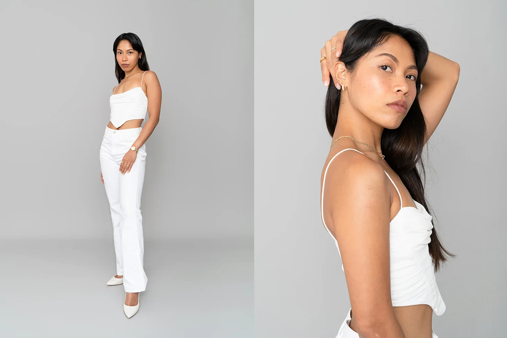
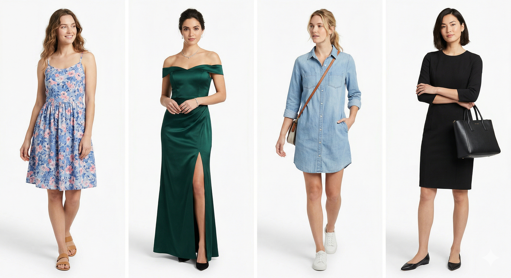
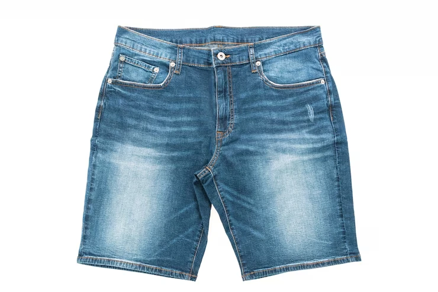

About the Brand
A neighborhood boutique with a confident fashion point of view
Cynthias DressShop was created to give local shoppers a place where trendy style, wearable comfort, and affordable choices come together in one welcoming store.


Community First
Every collection is selected to feel stylish, current, and welcoming for everyday local shopping.
Brand Story
Cynthias DressShop grew from the idea that a local boutique can feel elegant, modern, and approachable at the same time. The store focuses on clothes that are easy to style, easy to love, and easy to bring into daily life.
Mission
To serve teenagers, students, and residents with stylish and affordable clothing that helps them feel confident for school, errands, celebrations, and weekends.
Vision
To become a favorite fashion destination in Antique by offering fresh looks, strong value, and a welcoming shopping experience rooted in community style.
Store Background
Thoughtful fashion choices for real local lifestyles
The boutique curates pieces that move easily from daytime routines to evening plans, with selections that feel current without becoming difficult to wear.
What makes the store special
The collection balances feminine dresses, polished tops, trend driven crop tops, easy denim, street inspired tees, and accessories that complete a full outfit. It is designed for shoppers who want variety without sacrificing taste.
From students preparing for daily wear to families looking for event ready pieces, the store keeps its fashion point of view modern, soft, and presentation ready.
Community focus
Located in San Jose de Buenavista, Antique, Cynthias DressShop is built around local needs. It celebrates affordable style, curated variety, and the kind of shopping experience that feels personal and helpful.
Every visit is meant to feel inspiring, whether the shopper is searching for a new statement dress, practical everyday basics, or a finishing touch for a complete look.
Visual Mood
The style direction behind the boutique
A mix of fashion editorials, coordinated looks, and community centered styling references the visual personality of the brand.